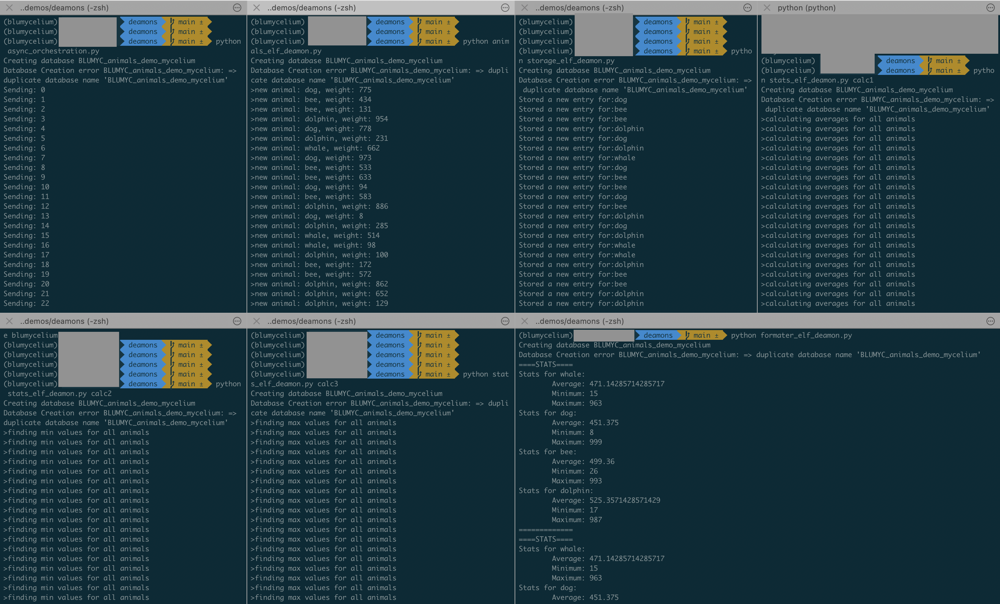

Async demo
(WIP)
Introduction
Here are some details about the demo provided in the repo: demos/daemons/. The file async_orchestration.py is basically an asynchronous version of the demo in sync_orchestration.py. It starts 3 types of processes (elves):
Animals: this class represents an animal that will be stored in the database (here the simple json file). It just contains the animal’s species, and weight.
Storage: a simple interface to a database that all elves connect to. It can be anything, here, for the sake of simplicity it is just a json file.
Stats: that will compute some statistics using data stored in the database (again, just a json file here). 3 of them will be started. One calculating the average size, one the min and the last one the max size.
This example shows how these elves will run independently and their executions and dependencies will be all handled by bluycelium using Arangodb behind the scenes.
Explain the files
elves.py: code representing the elves (or processes). Simple classes that inherit from MachineElf class and have at least one function starting by task_ that tells what the elf will do.
- async_orchestration.py: this code is responsible for two things.
Create the mycelium, which is an Arangodb database storing the processes, their states and dependencies.
Tell the elves (processes) what they should do.
for nb in range(100): print("Sending: %s" % nb) mesurement = animals.task_get_animal_data() store.task_save_animal_data(species=mesurement["species"], weight=mesurement["weight"]) #print stats every 10 iterations if nb % 5 ==0: mean = mean_calc.task_calculate_means() mins = min_calc.task_calculate_mins() maxs = max_calc.task_calculate_maxs() printer.task_print_stats(means=mean["means"], mins=mins["mins"], maxs=maxs["maxs"]) time.sleep(1)Important note: the code above will not be the one that will be executed exactly. lumycellium will do some introspection and store the processes and their dependencies in the mycelium and execute the code when the elves are actaully started with the start_job() function. In the sync_orchestration.py example it is done in the same file, here the purpose is to show you that they can run independently and blumycelium will take care of any dependencies between them.
*_daemon.py: these files start the different elves separately. They create an elf class, for example:
elf = Storage("animals data store", mycellium)The elf is uniquely identified by its name “animals data store” so when creating an elf with this name, blumycelium will know to fetch the one already registered in the mycelium. Once the elf is fetched, call the start_job() function and blumycelium will check if all the jobs that it depends on are done (if any) and then start executing the tasks.
Make it run
Create the mycelium and register elves and tell them what to do and how to interact together (orchestration)
python async_orchestration.py
Start the elves in any order in separate windows or tabs and watch the magic happen!
# Start the elf generating random animals with species and weight python animals_elf_deamon.py # Start the elf storing the animals generated by the animals_elf_deamon.py and store them in the database (json file here) python storage_elf_deamon.py # Start the elves doing some calculations with the data python stats_elf_deamon.py calc1 python stats_elf_deamon.py calc2 python stats_elf_deamon.py calc3 # Start the elf generating the report from the stats generated python formater_elf_deamon.py
{kind=link}
You can now connect to the arangodb database and look at the graphs if you are curious about how it works behind the scenes.
You should now be ready to build your own elves and orchestrations. If you have any suggestions about features or feedback about the documentation please open github issues https://github.com/bluwr-tech/blumycelium